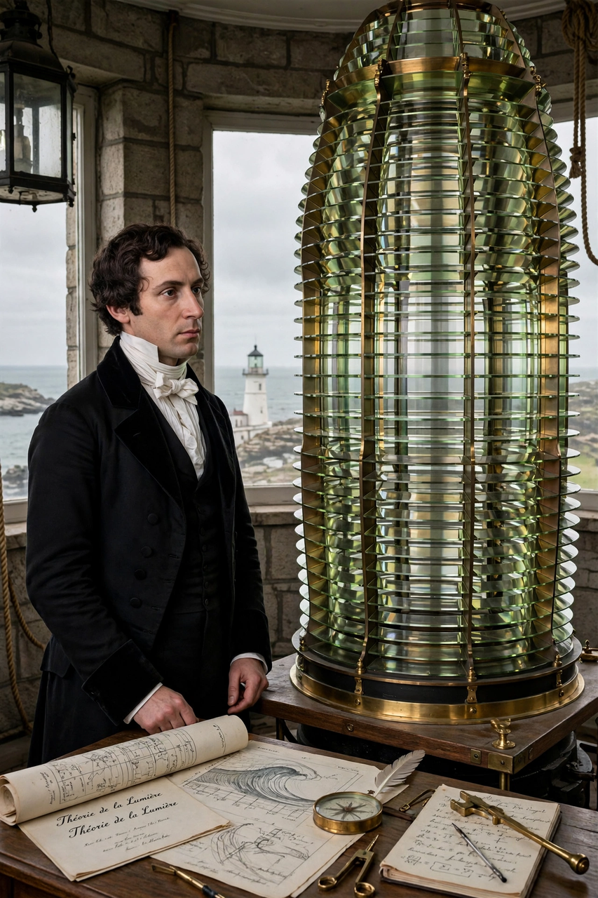

| Born | May 10, 1788 Broglie, France |
|---|---|
| Died | July 14, 1827 (aged 39) Ville-d'Avray, France |
| Alma mater | École Polytechnique; École des Ponts et Chaussées |
| Known for | Fresnel diffraction; Fresnel lens; Fraunhofer diffraction theory; transverse wave theory of light |
| Fields | Physics (optics), civil engineering |
Augustin-Jean Fresnel (May 10, 1788 – July 14, 1827) was a French civil engineer and physicist whose research in optics established the wave theory of light on a rigorous mathematical footing. He combined Huygens' principle with the principle of interference into the Huygens–Fresnel principle, derived the Fresnel equations for reflection and refraction, and argued that light waves are purely transverse — explaining polarization.
Fresnel's prize memoir on diffraction (1818) treated the near-field regime now called Fresnel diffraction, complementing the far-field Fraunhofer diffraction pattern. A famous episode of the Academy's prize competition: Siméon Denis Poisson, a sceptic of the wave theory, deduced from Fresnel's integrals that a bright spot should appear at the centre of a circular obstacle's shadow — the Arago spot — and François Arago's experimental confirmation converted many sceptics.
As commissioner of lighthouses, Fresnel designed the stepped Fresnel lens, first installed at the Cordouan lighthouse in 1823, which greatly increased lighthouse range and remains ubiquitous in lighthouses, spotlights, and imaging optics. He died of tuberculosis at age 39; his name is one of the 72 inscribed on the Eiffel Tower.
Categories: 1788 births | 1827 deaths | French physicists | Optical physicists